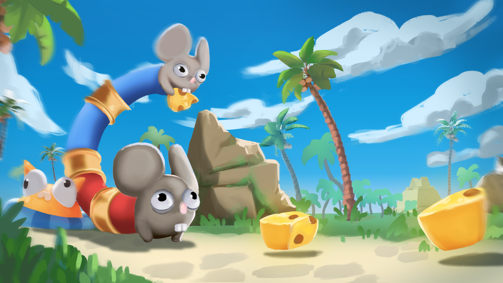

CATTAC
Made with: Unity
Ongoing project scheduled for release in July 2026
The project
CATTAC is a 3D two-player co-op puzzle game featuring two micestadors (mice-conquistadors)
disguised as a two-headed divinity.
This divinity is worshipped by caztecs (cat-aztecs), whose land the two micestadors explore in search of their lost comrades and the Golden Cheese pieces.
The two players are physically linked together by the disguise, forcing them to cooperate even to move.

Context
This project was developed as a final Master project at
Piktura,
made in 17 months with a team of 6 people.
Team:
Antoine Foucault - Project Manager, Creative Director, Programmer
Romain Horrenberger - Game Designer, Level Designer
Naomie Halter - Artistic Director, Concept Artist, Key Art
Julie Boyaval - Character Artist
Mahiedine Boudrissa - Environment Artist, Tech Artist
Gaëlle Becel - Props Artist
My role
Project Manager : I was in charge of organizing meetings with my team, planning our tasks and deadlines, and making big decisions when needed.
Creative Director : I was the creative director, at the root of the game idea, who created and developed the concept.
Programmer : I was the only programmer of the team, my main responsibilities included developing the two-headed character controller and the physical interactive elements.
Rope Physics
Since the project's main pillar was to the two-headed character controller, my main focus at the start of the development was to create a robust rope system.
This was a great way for me to learn and analyze such a specific and interesting area of game development.
The goal was to have two players, each at one end of the rope and able to influence the whole rope's movement.
Before starting, I decided to separate the physics logic from the visual logic of the rope, which would be two different challenges.
My very first approach was a naive one for rapid-fire prototyping.
For the physics, the rope consist of several points in space that each try to move towards one another to ensure the distance between each point stays the same.
For this naive approach, I manually overrode the position of each point toward a target destination, using Position Based Dynamics (PBD).
For a first prototype it was enough, but I knew I would had to delve deeper to make a polished character controller, especially since this implementation had a lot of issues (more on that later).
For the visual, my first instinct was to try mesh generation.
It would allow me to generate a good-looking mesh to modify based on the rope's points' positions.
In the end, the in-game result looked off, so I knew I had to explore other techniques. That said, I really enjoyed learning about mesh generation in Unity!
The first iteration helped defined the game as a whole, but needed a lot of improvements, such as physical stability, correct collision handling, and a good-looking rope mesh.
To ensure the rope physics was as best as possible, I did conducted extensive research on existing implementations, and asked some game developers experienced with physics their go-to approach.
This led me to narrow down 4 main approaches for the character controller :
- The default Unity joints
- Unity's joint system, with collisions separated from the joints
- Delving deeper in PBD
- Continuing using my naive, manual approach, but with more notions of PBD
This one would be simple to implement, handling collisions easily thanks to PhysX, but less flexible for specific implementations.
This approach uses the same principle as the first one, but offers more physical stability but less accurate collisions by separating joints and collisions.
Using PBD to manually move the points accurately with physically proven formulas would be a long approach to implement, but would give us a very accurate and flexible collision system.
This would allow me to appropriate myself PBD, but with a simpler implementation and a more understandable code architecture
After having quickly prototyped each approach, the one I chose was the very first one: the default Unity joints.
Although this approach may feel less technically ambitious from a developer's perspective, I definitively think it was the right choice,
since it provided the best balance between quality and development time.
It quickly reassured the team about the technical feasibility of the character controller and allowed me to focus on other aspects of the game.
Moreover, this approach allowed for a lot of flexibility and parameters to expose for my game designer, allowing us to make a rope as stiff, as heavy or as elastic as we want.
Choosing the default Unity physics solution also meant my game designer and I could use the default Unity components for simple interactions in the project.
Finally for the rope visual, we decided with our Character Artist to simply make a rope mesh and rig it.
From a technical perspective, it made everything easier: Each bone was simply linked to a joint.
And from an artistic perspective, it allowed for more creative freedom and technical flexibility for a beautiful render.
And finally, with some polish, like a sinusoidal movement to emulate a snake's movement, the controller was done!
Conclusion
Developing this rope-based character controller was a rewarding challenge, and took less time than expected thanks to prioritizing quick-to-implement solutions that help the production cycle.
Obviously the controller has still some limitations.
For instance, since it relies on multiple SphereCollider linked together, it's possible pass through small gaps.
We addressed this by avoiding such obstacles in the level design.
Sometimes the collisions can still be wacky, but when handled carefully, they also contributes to the charm of physics-based gameplay without feeling too buggy for the players.
The project is still ongoing, with a full released for July 2026.